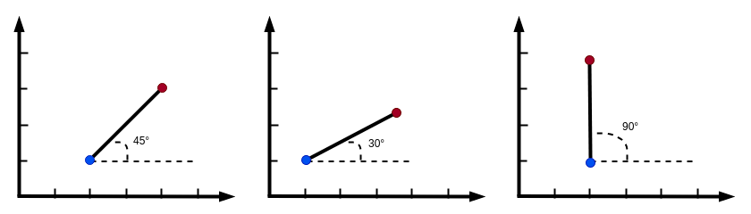

自由度理解
什么是自由度¶
自由度全称 Degrees of Freedom，简称 DoF 。
自由度是用最少的数据配置来描述物体在空间中位置或形态。
空间位置描述¶
一维空间的点¶
在一维空间的线段中，我们来描述一个点，我们通常用一个数字描述。
例如上图：
- 我们描述蓝色的点的位置用 1 可以准确的表达。
二维空间的单点¶
在二维空间中，我们描述一个点，我们通常用横纵坐标来进行描述。
如上图:
- 我们描述蓝色的点的位置用 (3,2) 就可以准确的表达。
二维空间的两点¶
如果我们要描述两个点，如下图:
我们要描述蓝色的点和红色的点，那么我们可以用连个坐标点来进行描述：
- 蓝点 (2, 1) 红点 (4, 3)
二维空间中的线段¶
在二维空间中，我们如果要去描述一个线段，该如何去准确表达呢。
我们可以：
- 描述起始点和结束点，起始点(2,1) 结束点(4, 3)
Note
我们所有的数学问题都是为了解决现实生活的。
我们如果将线段看成一条棍子，如何在一个桌子上去描述棍子的位置呢？
认识自由度¶
二维空间中的棍子¶
我们将桌子看成一个坐标系，那么我们如果用大白话去描述棍子的位置，我们会说:
棍子斜着朝上摆在靠上的地方。
这种描述并不准确，但是说明了两个问题：
-
斜着朝上 说明的是角度
-
靠上说明的是位置
如果我们准确的去表达：
棍子起始坐标点为 (2,1) 的位置，角度是45度
Note
这里值得思考的是，描述以上问题时，是有前置条件的：
-
棍子的长度是确定的。
-
角度起始位置问题。
- 角度旋转的正负方向问题。
- 坐标系如何摆放问题。
角度起始：我们将x轴正向定义为角度起始点。
角度旋转正负：逆时针定义为正向，顺时针定义为负向。
坐标系摆放：坐标系其实可以随意摆放，摆放不同，位置描述就不同。
棍子的思考¶
棍子是摆放在桌子上的，那么我们是不是可以随时改变棍子的位置呢？

通过上图，我们可以得出一个结论：
- 可以控制棍子的平移位置
- 可以控制棍子的旋转姿态
哪什么是自由度呢?
对于棍子来说，可以水平垂直移动，可以旋转，这个就是自由，这个就是自由度。
准确的说，自由度表现在位移和旋转的能力上。
对于当前的状况而言，棍子和桌子构成了一个系统，这个系统中，棍子具备了一定的自由度。这个自由度表现在，可以水平移动，可以垂直移动，可以旋转。那么我们可以说棍子具备3个自由度。
Note
小结:
在二维空间中，自由度体现在 水平移动，垂直移动，旋转三个方面。
通常我们会说某某物体有几个自由度，说的就是他是否具备移动和旋转方面的自由度。
思考:
如果是三维空间，那么自由度主要是指那几个方面？
固定的连杆¶

如上图，在二维的空间中，现在存在一个连杆，其中蓝色的一端是固定在桌子上的。那么对于这个连杆而言，他具备几个自由度呢？
由于一端已经固定，整个木棍是不可以再移动了，只能围绕着这个固定的点进行旋转，因此只有旋转方面的自由度。
自由度描述¶
单连杆固定系统¶
对于这个连杆来说，自由度我们已经确定，只有一个可以旋转的自由度。那么我们如何准确的描述这个连杆的位置呢？
通常，我们描述起始位置（蓝色点）的坐标，以及旋转的角度，就可以准确的描述出这个连杆的位置和姿态。